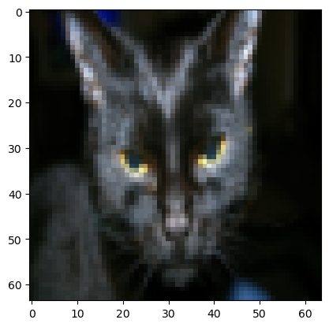
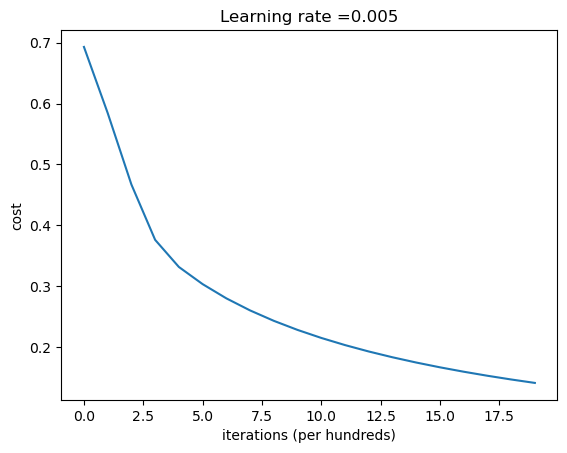
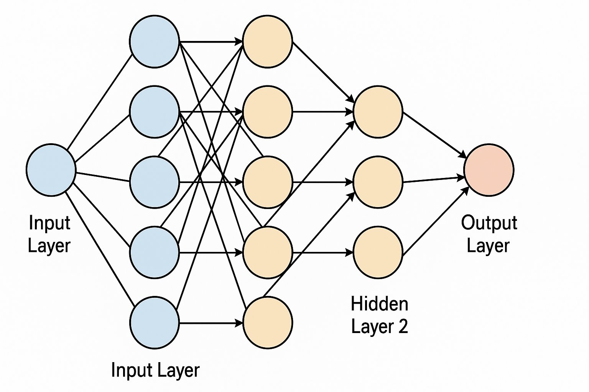

# make sure to have these libraries installed. you can use pip install <library>
import numpy as np
import matplotlib.pyplot as plt
import h5py
import scipy
from PIL import Image
from scipy import ndimage
# notice the lr_utils needs to be in the same directory of your notebook
from lr_utils import load_dataset
%matplotlib inlineLogistic Regression with a Neural Network mindset
This is an assigment from Andrew Ng’s Deep Learning Specialization. I solved the assignment, and believe this is one of the most interesting learning exercises to see the building blocks of neural networks.
I removed some unecessary text, but other than that, this is heavily taken from Andres Ng’s course.
Instructions: - Do not use loops (for/while) in your code, unless the instructions explicitly ask you to do so.
You will learn to: - Build the general architecture of a learning algorithm, including: - Initializing parameters - Calculating the cost function and its gradient - Using an optimization algorithm (gradient descent) - Gather all three functions above into a main model function, in the right order.
1 - Packages
First, let’s run the cell below to import all the packages that you will need during this assignment. - numpy is the fundamental package for scientific computing with Python. - h5py is a common package to interact with a dataset that is stored on an H5 file. - matplotlib is a famous library to plot graphs in Python. - PIL and scipy are used here to test your model with your own picture at the end.
2 - Overview of the Problem set
Problem Statement: You are given a dataset (“data.h5”) containing: - a training set of m_train images labeled as cat (y=1) or non-cat (y=0) - a test set of m_test images labeled as cat or non-cat - each image is of shape (num_px, num_px, 3) where 3 is for the 3 channels (RGB). Thus, each image is square (height = num_px) and (width = num_px).
You will build a simple image-recognition algorithm that can correctly classify pictures as cat or non-cat.
Let’s get more familiar with the dataset. Load the data by running the following code.
# Loading the data (cat/non-cat)
train_set_x_orig, train_set_y, test_set_x_orig, test_set_y, classes = load_dataset()We added “_orig” at the end of image datasets (train and test) because we are going to preprocess them. After preprocessing, we will end up with train_set_x and test_set_x (the labels train_set_y and test_set_y don’t need any preprocessing).
Each line of your train_set_x_orig and test_set_x_orig is an array representing an image. You can visualize an example by running the following code. Feel free also to change the index value and re-run to see other images.
# Example of a picture
index = 25
plt.imshow(train_set_x_orig[index])
print ("y = " + str(train_set_y[:, index]) + ", it's a '" + classes[np.squeeze(train_set_y[:, index])].decode("utf-8") + "' picture.")y = [1], it's a 'cat' picture.
Many software bugs in deep learning come from having matrix/vector dimensions that don’t fit. If you can keep your matrix/vector dimensions straight you will go a long way toward eliminating many bugs.
Exercise: Find the values for: - m_train (number of training examples) - m_test (number of test examples) - num_px (= height = width of a training image) Remember that train_set_x_orig is a numpy-array of shape (m_train, num_px, num_px, 3). For instance, you can access m_train by writing train_set_x_orig.shape[0].
### START CODE HERE ### (≈ 3 lines of code)
m_train = train_set_x_orig.shape[0]
m_test = test_set_x_orig.shape[0]
num_px = train_set_x_orig.shape[1]
### END CODE HERE ###
print ("Number of training examples: m_train = " + str(m_train))
print ("Number of testing examples: m_test = " + str(m_test))
print ("Height/Width of each image: num_px = " + str(num_px))
print ("Each image is of size: (" + str(num_px) + ", " + str(num_px) + ", 3)")
print ("train_set_x shape: " + str(train_set_x_orig.shape))
print ("train_set_y shape: " + str(train_set_y.shape))
print ("test_set_x shape: " + str(test_set_x_orig.shape))
print ("test_set_y shape: " + str(test_set_y.shape))Number of training examples: m_train = 209
Number of testing examples: m_test = 50
Height/Width of each image: num_px = 64
Each image is of size: (64, 64, 3)
train_set_x shape: (209, 64, 64, 3)
train_set_y shape: (1, 209)
test_set_x shape: (50, 64, 64, 3)
test_set_y shape: (1, 50)| m_train | 209 |
| m_test | 50 |
| num_px | 64 |
For convenience, you should now reshape images of shape (num_px, num_px, 3) in a numpy-array of shape (num_px \(*\) num_px \(*\) 3, 1). After this, our training (and test) dataset is a numpy-array where each column represents a flattened image. There should be m_train (respectively m_test) columns.
Exercise: Reshape the training and test data sets so that images of size (num_px, num_px, 3) are flattened into single vectors of shape (num_px \(*\) num_px \(*\) 3, 1).
A trick when you want to flatten a matrix X of shape (a,b,c,d) to a matrix X_flatten of shape (b\(*\)c\(*\)d, a) is to use:
X_flatten = X.reshape(X.shape[0], -1).T # X.T is the transpose of X# Reshape the training and test examples
train_set_x_flatten = train_set_x_orig.reshape(train_set_x_orig.shape[0], -1).T
test_set_x_flatten = test_set_x_orig.reshape(test_set_x_orig.shape[0], -1).T
print ("train_set_x_flatten shape: " + str(train_set_x_flatten.shape))
print ("train_set_y shape: " + str(train_set_y.shape))
print ("test_set_x_flatten shape: " + str(test_set_x_flatten.shape))
print ("test_set_y shape: " + str(test_set_y.shape))
print ("sanity check after reshaping: " + str(train_set_x_flatten[0:5,0]))train_set_x_flatten shape: (12288, 209)
train_set_y shape: (1, 209)
test_set_x_flatten shape: (12288, 50)
test_set_y shape: (1, 50)
sanity check after reshaping: [17 31 56 22 33]To represent color images, the red, green and blue channels (RGB) must be specified for each pixel, and so the pixel value is actually a vector of three numbers ranging from 0 to 255.
One common preprocessing step in machine learning is to center and standardize your dataset, meaning that you substract the mean of the whole numpy array from each example, and then divide each example by the standard deviation of the whole numpy array. But for picture datasets, it is simpler and more convenient and works almost as well to just divide every row of the dataset by 255 (the maximum value of a pixel channel).
Let’s standardize our dataset.
train_set_x = train_set_x_flatten/255.
test_set_x = test_set_x_flatten/255.3 - General Architecture of the learning algorithm
It’s time to design a simple algorithm to distinguish cat images from non-cat images.
You will build a Logistic Regression, using a Neural Network mindset. The following Figure explains why Logistic Regression is actually a very simple Neural Network!

Mathematical expression of the algorithm:
For one example \(x^{(i)}\): \[z^{(i)} = w^T x^{(i)} + b \tag{1}\] \[\hat{y}^{(i)} = a^{(i)} = sigmoid(z^{(i)})\tag{2}\] \[ \mathcal{L}(a^{(i)}, y^{(i)}) = - y^{(i)} \log(a^{(i)}) - (1-y^{(i)} ) \log(1-a^{(i)})\tag{3}\]
The cost is then computed by summing over all training examples: \[ J = \frac{1}{m} \sum_{i=1}^m \mathcal{L}(a^{(i)}, y^{(i)})\tag{6}\]
Key steps: In this exercise, you will carry out the following steps:
- Initialize the parameters of the model
- Learn the parameters for the model by minimizing the cost
- Use the learned parameters to make predictions (on the test set)
- Analyse the results and conclude4 - Building the parts of our algorithm
The main steps for building a Neural Network are: 1. Define the model structure (such as number of input features) 2. Initialize the model’s parameters 3. Loop: - Calculate current loss (forward propagation) - Calculate current gradient (backward propagation) - Update parameters (gradient descent)
You often build 1-3 separately and integrate them into one function we call model().
4.1 - Helper functions
As you’ve seen in the figure above, you need to compute \(sigmoid( w^T x + b) = \frac{1}{1 + e^{-(w^T x + b)}}\) to make predictions.
# GRADED FUNCTION: sigmoid
def sigmoid(z):
"""
Compute the sigmoid of z
Arguments:
z -- A scalar or numpy array of any size.
Return:
s -- sigmoid(z)
"""
## Sigmoid function
s = (1/(1+np.exp(-z))) ## z=(wt + a)
return sprint ("sigmoid([0, 2]) = " + str(sigmoid(np.array([0,2]))))sigmoid([0, 2]) = [0.5 0.88079708]4.2 - Initializing parameters
Next step is to initialize w as a vector of zeros. If you don’t know what numpy function to use, look up np.zeros() in the Numpy library’s documentation.
#initialize_with_zeros
def initialize_with_zeros(dim):
"""
This function creates a vector of zeros of shape (dim, 1) for w and initializes b to 0.
Argument:
dim -- size of the w vector we want (or number of parameters in this case)
Returns:
w -- initialized vector of shape (dim, 1)
b -- initialized scalar (corresponds to the bias)
"""
# initialize parameter
w = np.zeros(shape=(dim, 1))
b = 0
assert(w.shape == (dim, 1))
assert(isinstance(b, float) or isinstance(b, int))
return w, bdim = 2
w, b = initialize_with_zeros(dim)
print ("w = " + str(w))
print ("b = " + str(b))w = [[0.]
[0.]]
b = 0IMPORTANT For image inputs, w will be of shape (num_px \(\times\) num_px \(\times\) 3, 1). This is the number of betas in the estimation
4.3 - Forward and Backward propagation
Now that your parameters are initialized, you can do the “forward” and “backward” propagation steps for learning the parameters.
Let’s Implement a function propagate() that computes the cost function and its gradient.
Forward Propagation: - You get X - You compute \(A = \sigma(w^T X + b) = (a^{(1)}, a^{(2)}, ..., a^{(m-1)}, a^{(m)})\) - You calculate the cost function: \(J = -\frac{1}{m}\sum_{i=1}^{m}y^{(i)}\log(a^{(i)})+(1-y^{(i)})\log(1-a^{(i)})\)
Backward Propagation:
Here are the two formulas you will be using for the derivatives:
\[ \frac{\partial J}{\partial w} = \frac{1}{m}X(A-Y)^T\tag{7}\] \[ \frac{\partial J}{\partial b} = \frac{1}{m} \sum_{i=1}^m (a^{(i)}-y^{(i)})\tag{8}\]
# GRADED FUNCTION: propagate
def propagate(w, b, X, Y):
"""
Implement the cost function and its gradient for the propagation explained above
Arguments:
w -- weights, a numpy array of size (num_px * num_px * 3, 1)
b -- bias, a scalar
X -- data of size (num_px * num_px * 3, number of examples)
Y -- true "label" vector (containing 0 if non-cat, 1 if cat) of size (1, number of examples)
# w=vector(dim=number of variables)
# X= matrix(variables,observations)
Return:
cost -- negative log-likelihood cost for logistic regression
dw -- gradient of the loss with respect to w, thus same shape as w
db -- gradient of the loss with respect to b, thus same shape as b
Tips:
- Write your code step by step for the propagation. np.log(), np.dot()
"""
m = X.shape[1] # numer of observations
# FORWARD PROPAGATION (FROM X TO COST)
A = sigmoid(np.dot(w.T, X) + b) # compute activation
cost = (- 1 / m) * np.sum(Y * np.log(A) + (1 - Y) * (np.log(1 - A))) # compute cost
# BACKWARD PROPAGATION (TO FIND GRAD)
dw = (1 / m) * np.dot(X, (A - Y).T) # dim=number of variables
db = (1 / m) * np.sum(A - Y)
assert(dw.shape == w.shape)
assert(db.dtype == float)
cost = np.squeeze(cost)
assert(cost.shape == ())
grads = {"dw": dw,
"db": db}
return grads, cost## let's see if the function works
w, b, X, Y = np.array([[1.],[2.]]), 2., np.array([[1.,2.,-1.],[3.,4.,-3.2]]), np.array([[1,0,1]])
grads, cost = propagate(w, b, X, Y)
print ("dw = " + str(grads["dw"]))
print ("db = " + str(grads["db"]))
print ("cost = " + str(cost))dw = [[0.99845601]
[2.39507239]]
db = 0.001455578136784208
cost = 5.8015453193945534.4 - Optimization
- You have initialized your parameters.
- You are also able to compute a cost function and its gradient.
- Now, you want to update the parameters using gradient descent.
Let’s write an optimization function. The goal is to learn \(w\) and \(b\) by minimizing the cost function \(J\). For a parameter \(\theta\), the update rule is $ = - d$, where \(\alpha\) is the learning rate.
# GRADED FUNCTION: optimize
def optimize(w, b, X, Y, num_iterations, learning_rate, print_cost = False):
"""
This function optimizes w and b by running a gradient descent algorithm
Arguments:
w -- weights, a numpy array of size (num_px * num_px * 3, 1)
b -- bias, a scalar
X -- data of shape (num_px * num_px * 3, number of examples)
Y -- true "label" vector (containing 0 if non-cat, 1 if cat), of shape (1, number of examples)
num_iterations -- number of iterations of the optimization loop
learning_rate -- learning rate of the gradient descent update rule
print_cost -- True to print the loss every 100 steps
Returns:
params -- dictionary containing the weights w and bias b
grads -- dictionary containing the gradients of the weights and bias with respect to the cost function
costs -- list of all the costs computed during the optimization, this will be used to plot the learning curve.
Tips:
You basically need to write down two steps and iterate through them:
1) Calculate the cost and the gradient for the current parameters. Use propagate().
2) Update the parameters using gradient descent rule for w and b.
"""
costs = []
for i in range(num_iterations):
# Cost and gradient calculation (≈ 1-4 lines of code)
grads, cost = propagate(w, b, X, Y)
# Retrieve derivatives from grads
dw = grads["dw"]
db = grads["db"]
# update rule (≈ 2 lines of code)
w = w - learning_rate*dw
b = b - learning_rate*db
# Record the costs
if i % 100 == 0:
costs.append(cost)
# Print the cost every 100 training iterations
if print_cost and i % 100 == 0:
print ("Cost after iteration %i: %f" %(i, cost))
params = {"w": w,
"b": b}
grads = {"dw": dw,
"db": db}
return params, grads, costsparams, grads, costs = optimize(w, b, X, Y, num_iterations= 1000, learning_rate = 0.009, print_cost = True)
print ("w = " + str(params["w"]))
print ("b = " + str(params["b"]))
print ("dw = " + str(grads["dw"]))
print ("db = " + str(grads["db"]))Cost after iteration 0: 5.801545
Cost after iteration 100: 1.055933
Cost after iteration 200: 0.378303
Cost after iteration 300: 0.363595
Cost after iteration 400: 0.356242
Cost after iteration 500: 0.349210
Cost after iteration 600: 0.342420
Cost after iteration 700: 0.335860
Cost after iteration 800: 0.329517
Cost after iteration 900: 0.323380
w = [[-0.64226437]
[-0.43498153]]
b = 2.2025594747904087
dw = [[ 0.06282959]
[-0.01416124]]
db = -0.04847508604218077Predictions
We are able to use w and b to predict the labels for a dataset X. Let’s implement a predict() function. There are two steps to computing predictions:
Calculate \(\hat{Y} = A = \sigma(w^T X + b)\)
Convert the entries of a into 0 (if activation <= 0.5) or 1 (if activation > 0.5), stores the predictions in a vector
Y_prediction. If you wish, you can use anif/elsestatement in aforloop (though there is also a way to vectorize this).
# GRADED FUNCTION: predict
def predict(w, b, X):
'''
Predict whether the label is 0 or 1 using learned logistic regression parameters (w, b)
Arguments:
w -- weights, a numpy array of size (num_px * num_px * 3, 1)
b -- bias, a scalar
X -- data of size (num_px * num_px * 3, number of examples)
Returns:
Y_prediction -- a numpy array (vector) containing all predictions (0/1) for the examples in X
'''
m = X.shape[1]
Y_prediction = np.zeros((1,m))
w = w.reshape(X.shape[0], 1)
# Compute vector "A" predicting the probabilities of a cat being present in the picture
A = sigmoid(np.dot(w.T, X) + b)
for i in range(A.shape[1]):
# Convert probabilities A[0,i] to actual predictions p[0,i]
Y_prediction[0, i] = 1 if A[0, i] > 0.5 else 0
assert(Y_prediction.shape == (1, m))
return Y_predictionw = np.array([[0.1124579],[0.23106775]])
b = -0.3
X = np.array([[1.,-1.1,-3.2],[1.2,2.,0.1]])
print ("predictions = " + str(predict(w, b, X)))predictions = [[1. 1. 0.]]What to remember:
You’ve implemented several functions that:
Initialize (w,b)
Optimize the loss iteratively to learn parameters (w,b):
- computing the cost and its gradient
- updating the parameters using gradient descent
Use the learned (w,b) to predict the labels for a given set of examples
5 - Merge all functions into a model
You will now see how the overall model is structured by putting together all the building blocks (functions implemented in the previous parts) together, in the right order.
Let’s now implment a full model using the following notation:
- Y_prediction_test for your predictions on the test set
- Y_prediction_train for your predictions on the train set
- w, costs, grads for the outputs of optimize()# Model
def model(X_train, Y_train, X_test, Y_test, num_iterations = 2000, learning_rate = 0.5, print_cost = False):
"""
Builds the logistic regression model by calling the function you've implemented previously
Arguments:
X_train -- training set represented by a numpy array of shape (num_px * num_px * 3, m_train)
Y_train -- training labels represented by a numpy array (vector) of shape (1, m_train)
X_test -- test set represented by a numpy array of shape (num_px * num_px * 3, m_test)
Y_test -- test labels represented by a numpy array (vector) of shape (1, m_test)
num_iterations -- hyperparameter representing the number of iterations to optimize the parameters
learning_rate -- hyperparameter representing the learning rate used in the update rule of optimize()
print_cost -- Set to true to print the cost every 100 iterations
Returns:
d -- dictionary containing information about the model.
"""
# initialize parameters with zeros (≈ 1 line of code)
w, b = initialize_with_zeros(X_train.shape[0])
# Gradient descent (≈ 1 line of code)
parameters, grads, costs = optimize(w, b, X_train, Y_train, num_iterations, learning_rate, print_cost)
# Retrieve parameters w and b from dictionary "parameters"
w = parameters["w"]
b = parameters["b"]
# Predict test/train set examples (≈ 2 lines of code)
Y_prediction_test = predict(w, b, X_test)
Y_prediction_train = predict(w, b, X_train)
# Print train/test Errors
print("train accuracy: {} %".format(100 - np.mean(np.abs(Y_prediction_train - Y_train)) * 100))
print("test accuracy: {} %".format(100 - np.mean(np.abs(Y_prediction_test - Y_test)) * 100))
d = {"costs": costs,
"Y_prediction_test": Y_prediction_test,
"Y_prediction_train" : Y_prediction_train,
"w" : w,
"b" : b,
"learning_rate" : learning_rate,
"num_iterations": num_iterations}
return dTrain your model with real data
d = model(train_set_x, train_set_y, test_set_x, test_set_y,
num_iterations = 2000, learning_rate = 0.005,
print_cost = True)Cost after iteration 0: 0.693147
Cost after iteration 100: 0.584508
Cost after iteration 200: 0.466949
Cost after iteration 300: 0.376007
Cost after iteration 400: 0.331463
Cost after iteration 500: 0.303273
Cost after iteration 600: 0.279880
Cost after iteration 700: 0.260042
Cost after iteration 800: 0.242941
Cost after iteration 900: 0.228004
Cost after iteration 1000: 0.214820
Cost after iteration 1100: 0.203078
Cost after iteration 1200: 0.192544
Cost after iteration 1300: 0.183033
Cost after iteration 1400: 0.174399
Cost after iteration 1500: 0.166521
Cost after iteration 1600: 0.159305
Cost after iteration 1700: 0.152667
Cost after iteration 1800: 0.146542
Cost after iteration 1900: 0.140872
train accuracy: 99.04306220095694 %
test accuracy: 70.0 %Comment: Training accuracy is close to 100%. This is a good sanity check: your model is working and has high enough capacity to fit the training data. Test accuracy is 68%. It is actually not bad for this simple model, given the small dataset we used and that logistic regression is a linear classifier. But no worries, you’ll build an even better classifier next week!
Also, you see that the model is clearly overfitting the training data. Later in this specialization you will learn how to reduce overfitting, for example by using regularization. Using the code below (and changing the index variable) you can look at predictions on pictures of the test set.
Let’s also plot the cost function and the gradients.
# Plot learning curve (with costs)
costs = np.squeeze(d['costs'])
plt.plot(costs)
plt.ylabel('cost')
plt.xlabel('iterations (per hundreds)')
plt.title("Learning rate =" + str(d["learning_rate"]))
plt.show()
Interpretation: You can see the cost decreasing. It shows that the parameters are being learned. However, you see that you could train the model even more on the training set. Try to increase the number of iterations in the cell above and rerun the cells. You might see that the training set accuracy goes up, but the test set accuracy goes down. This is called overfitting.
All of this with a logistic regression
Everything we did here was to implement a logistic regression by hand using a neural network framework.
Let me show you how you would do this without a neural network
# import logistic regression
from sklearn.linear_model import LogisticRegression
from sklearn.metrics import accuracy_score
# Initialize the model
clf = LogisticRegression(max_iter=2000)
# Fit the model
clf.fit(train_set_x.T, train_set_y.ravel()) # transpose to shape (m, n_features)
# Predict
Y_prediction_train = clf.predict(train_set_x.T)
Y_prediction_test = clf.predict(test_set_x.T)
# Compute accuracy
train_accuracy = accuracy_score(train_set_y.ravel(), Y_prediction_train) * 100
test_accuracy = accuracy_score(test_set_y.ravel(), Y_prediction_test) * 100
print(f"Train accuracy: {train_accuracy:.2f} %")
print(f"Test accuracy: {test_accuracy:.2f} %")Train accuracy: 100.00 %
Test accuracy: 72.00 %Deep layer neural network.
Now you can expand what we have so far to a more complex/deeper neural networks. Let’s design a three layer neural network, with two hidden layers and a activation layer. This is what the model looks like:

Step 1: define activation function
import numpy as np
# Activation functions
def sigmoid(Z):
return 1 / (1 + np.exp(-Z))
def relu(Z):
return np.maximum(0, Z)
def relu_derivative(Z):
return Z > 0Step 2: initialize the parameters
Here is critical for you to get the dimensions of your matrices right.
The rule here is that your matrix will have rows equal to the number of neurons in the layers, and columns equal to number of neurons of the previous layers
For example:
- W1 matrix: n rows will be equal to the number of neurons on the second layer, and columns number of neurons (features/dimensions) of your observations.
# Initialize parameters for 3-layer NN
def initialize_parameters(n_x, n_h1, n_h2, n_y):
np.random.seed(1)
W1 = np.random.randn(n_h1, n_x) * 0.01
b1 = np.zeros((n_h1, 1))
W2 = np.random.randn(n_h2, n_h1) * 0.01
b2 = np.zeros((n_h2, 1))
W3 = np.random.randn(n_y, n_h2) * 0.01
b3 = np.zeros((n_y, 1))
parameters = {"W1": W1, "b1": b1,
"W2": W2, "b2": b2,
"W3": W3, "b3": b3}
return parametersForward Propagation
This is just the standard matrix multiplication + activation.
Layer 1: A1 = relu(W1*X + b1)
Layer 2: A2 = relu(W2 * A1 + b2)
Layer 3: Y = Sigmoid (W3 * A3 + b3)
Notice, the final layer is just the output. It means W3 will be a matrix of form (1, Dimension Previous Layer)
# Forward propagation
def forward_propagation(X, parameters):
W1, b1 = parameters['W1'], parameters['b1']
W2, b2 = parameters['W2'], parameters['b2']
W3, b3 = parameters['W3'], parameters['b3']
Z1 = np.dot(W1, X) + b1
A1 = relu(Z1)
Z2 = np.dot(W2, A1) + b2
A2 = relu(Z2)
Z3 = np.dot(W3, A2) + b3
A3 = sigmoid(Z3)
cache = (Z1, A1, Z2, A2, Z3, A3)
return A3, cacheTraining
From here next, it is standard training.
Compute Cost
Calculate Derivative
Update
Iterate many times until convergence
# Compute cost
def compute_cost(A3, Y):
m = Y.shape[1]
cost = -1/m * np.sum(Y * np.log(A3) + (1 - Y) * np.log(1 - A3))
return np.squeeze(cost)
# Backward propagation
def backward_propagation(X, Y, parameters, cache):
m = X.shape[1]
W1, W2, W3 = parameters['W1'], parameters['W2'], parameters['W3']
Z1, A1, Z2, A2, Z3, A3 = cache
dZ3 = A3 - Y
dW3 = 1/m * np.dot(dZ3, A2.T)
db3 = 1/m * np.sum(dZ3, axis=1, keepdims=True)
dA2 = np.dot(W3.T, dZ3)
dZ2 = dA2 * relu_derivative(Z2)
dW2 = 1/m * np.dot(dZ2, A1.T)
db2 = 1/m * np.sum(dZ2, axis=1, keepdims=True)
dA1 = np.dot(W2.T, dZ2)
dZ1 = dA1 * relu_derivative(Z1)
dW1 = 1/m * np.dot(dZ1, X.T)
db1 = 1/m * np.sum(dZ1, axis=1, keepdims=True)
grads = {"dW1": dW1, "db1": db1,
"dW2": dW2, "db2": db2,
"dW3": dW3, "db3": db3}
return grads
# Update parameters
def update_parameters(parameters, grads, learning_rate):
for l in range(1, 4):
parameters["W" + str(l)] -= learning_rate * grads["dW" + str(l)]
parameters["b" + str(l)] -= learning_rate * grads["db" + str(l)]
return parametersRun the Model
# Model function
def model_deep(X, Y, n_h1, n_h2, X_test, Y_test, num_iterations=10000, learning_rate=0.01, print_cost=False):
np.random.seed(3)
n_x = X.shape[0]
n_y = Y.shape[0]
parameters = initialize_parameters(n_x, n_h1, n_h2, n_y)
for i in range(0, num_iterations):
A3, cache = forward_propagation(X, parameters)
cost = compute_cost(A3, Y)
grads = backward_propagation(X, Y, parameters, cache)
parameters = update_parameters(parameters, grads, learning_rate)
if print_cost and i % 1000 == 0:
print(f"Cost after iteration {i}: {cost}")
# define predict function
print("getting accuracy")
def predict(X_input, parameters):
A3, _ = forward_propagation(X_input, parameters)
predictions = A3 > 0.5 # threshold at 0.5
return predictions.astype(int)
# Make predictions
print(X.shape)
Y_prediction_train = predict(X, parameters)
Y_prediction_test = predict(X_test, parameters)
# Compute accuracy
train_accuracy = 100 - np.mean(np.abs(Y_prediction_train - Y)) * 100
test_accuracy = 100 - np.mean(np.abs(Y_prediction_test - Y_test)) * 100
print(f"Train accuracy: {train_accuracy:.2f} %")
print(f"Test accuracy: {test_accuracy:.2f} %")
return parameters# Training
par = model_deep(train_set_x, train_set_y, 128, 64,test_set_x, test_set_y,
num_iterations=10000, print_cost = True)Cost after iteration 0: 0.6928232758641192
Cost after iteration 1000: 0.5556033301345353
Cost after iteration 2000: 0.10869684290403103
Cost after iteration 3000: 0.00901327220282444
Cost after iteration 4000: 0.0034411465825281607
Cost after iteration 5000: 0.001959035748986317
Cost after iteration 6000: 0.0013197818853752836
Cost after iteration 7000: 0.000974800703933675
Cost after iteration 8000: 0.0007629026553648688
Cost after iteration 9000: 0.0006211710517102307
getting accuracy
(12288, 209)
Train accuracy: 100.00 %
Test accuracy: 74.00 %some overfitting…. this is a topic for a machine learning class!